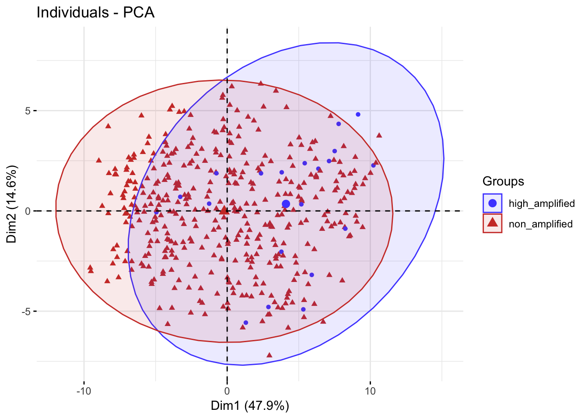
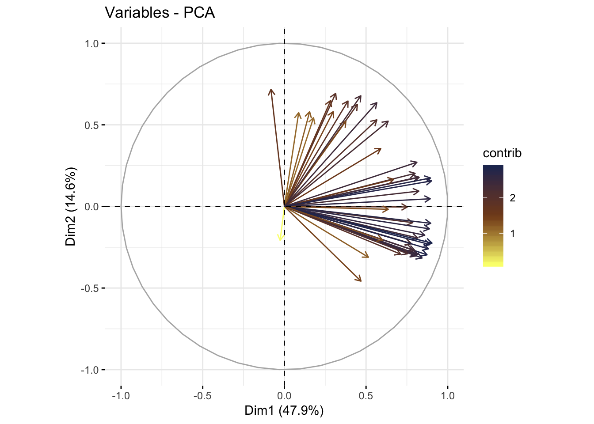

Last updated: 2019-06-30
Checks: 2 0
Knit directory: dlbcl_landscape/
This reproducible R Markdown analysis was created with workflowr (version 1.4.0). The Checks tab describes the reproducibility checks that were applied when the results were created. The Past versions tab lists the development history.
Great! Since the R Markdown file has been committed to the Git repository, you know the exact version of the code that produced these results.
Great! You are using Git for version control. Tracking code development and connecting the code version to the results is critical for reproducibility. The version displayed above was the version of the Git repository at the time these results were generated.
Note that you need to be careful to ensure that all relevant files for the analysis have been committed to Git prior to generating the results (you can use wflow_publish or wflow_git_commit). workflowr only checks the R Markdown file, but you know if there are other scripts or data files that it depends on. Below is the status of the Git repository when the results were generated:
Ignored files:
Ignored: .DS_Store
Ignored: .Rhistory
Ignored: .Rproj.user/
Untracked files:
Untracked: analysis/enrichment.Rmd
Untracked: analysis/newgs.Rmd
Untracked: code/gsva1.r
Untracked: code/gsva1.sh
Untracked: code/run_gsva1.pbs
Untracked: data/NIH_PDL1_amp_cases.csv
Untracked: data/NIH_PDL1_nonamp_cases.csv
Untracked: data/aliquot.tsv
Untracked: data/c2_human_immune_genesets.gmt
Untracked: data/dlbcl_total_immune_gset_v1_results.rds
Untracked: data/gdc_clinical_data.json
Untracked: data/gdc_files_and_case_ids.json
Untracked: data/gencode.v22.primary_assembly.annotation.gtf.geneinfo
Untracked: data/gset_ids_complete.rds
Untracked: data/htseq_counts/
Untracked: data/mmc1.xlsx
Untracked: data/nejmoa1801445_appendix_2.xlsx
Untracked: data/sample.tsv
Untracked: data/temp.dgelist_limma.rds
Untracked: docs/assets/
Untracked: output/combined_clin_data.xlsx
Untracked: output/dlbcl_expr_matrix.csv
Untracked: output/duke_expression_set_cleaned_log.rds
Untracked: output/duke_expressionset.rds
Untracked: output/duke_expressionset_pext.rds
Untracked: output/duke_extended_pheno_data.csv
Untracked: output/expr_matrix.csv
Untracked: output/nci_dlbcl_annotation.csv
Untracked: output/nci_dlbcl_unprocessed_counts.csv
Untracked: output/nci_expressionset.rds
Untracked: output/nci_expressionset_pext.rds
Untracked: output/nci_extended_pheno_data.csv
Untracked: output/total_immune_gset_v1.rds
Unstaged changes:
Modified: analysis/ext_pheno.Rmd
Note that any generated files, e.g. HTML, png, CSS, etc., are not included in this status report because it is ok for generated content to have uncommitted changes.
These are the previous versions of the R Markdown and HTML files. If you’ve configured a remote Git repository (see ?wflow_git_remote), click on the hyperlinks in the table below to view them.
| File | Version | Author | Date | Message |
|---|---|---|---|---|
| Rmd | d17eebb | mleukam | 2019-06-30 | added images and text to homepage describing first GSVA |
| html | 5a57ec0 | mleukam | 2019-06-28 | Build site. |
| Rmd | 42da9d5 | mleukam | 2019-06-28 | major overhaul of Duke count processing, updates of NCI pheno data |
| html | afd41f8 | mleukam | 2019-06-27 | Build site. |
| Rmd | a1df19d | mleukam | 2019-06-27 | updated homepage |
| html | a566468 | mleukam | 2019-06-19 | Build site. |
| Rmd | ff61a74 | mleukam | 2019-06-19 | updated links to notebooks |
| html | 1cfd653 | mleukam | 2019-06-13 | Build site. |
| Rmd | d87cb43 | mleukam | 2019-06-13 | wflow_publish(“analysis/index.Rmd”) |
| html | a3fea9c | mleukam | 2019-06-13 | Build site. |
| Rmd | 275aead | mleukam | 2019-06-13 | wflow_publish(“analysis/index.Rmd”) |
| html | 4c6b59d | mleukam | 2019-06-13 | Build site. |
| html | 6d82275 | mleukam | 2019-06-13 | Build site. |
| Rmd | b42800d | mleukam | 2019-06-13 | update title |
| html | 02539e9 | mleukam | 2019-06-13 | Build site. |
| Rmd | a254509 | mleukam | 2019-06-13 | wflow_publish(“analysis/index.Rmd”) |
| Rmd | 8582b74 | mleukam | 2019-06-13 | Start workflowr project. |
Welcome to the computational lab notebook for our research project focused on profiling the immune microenvironment of DLBCL using gene expression data and multi-channel immunohistochemistry, then linking clusters of similar immune signatures with mutations in tumors.
The over-arching questions are:
The primary data sources are:
/code/)Gene lists selected from work-in-progress analyis of TCGA macrophage signatures and from immune-related C2 “curated” gene sets from MSigDB. Also included T-cell inflamed signature from prior publications (Riyue Bao). No additional filtering was done after selection of candidate gene lists. GSVA run on expression data from NCI only to see how well it recapitulates known PD-L1 amplified immune phenotype.
There is poor separation, especially on PCA2, of the known immune phenotype PD-L1 amplified in NCI data.

This is because the gene sets are highly clustered in the same axis on the PCA analysis. There is too much co-variation among the immune gene sets I initially selected, and the overall analysis is not able to find meaningul differences in immune phenotype.

We will need better-separating gene sets to proceed.